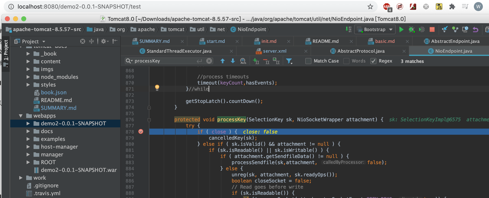
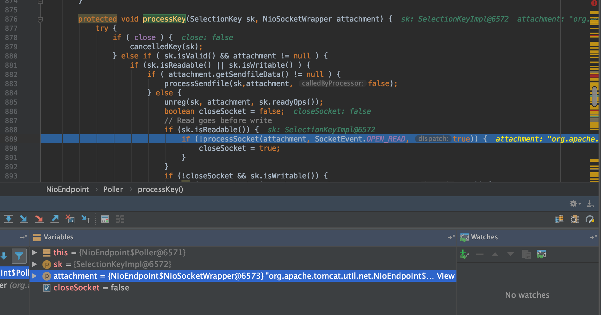
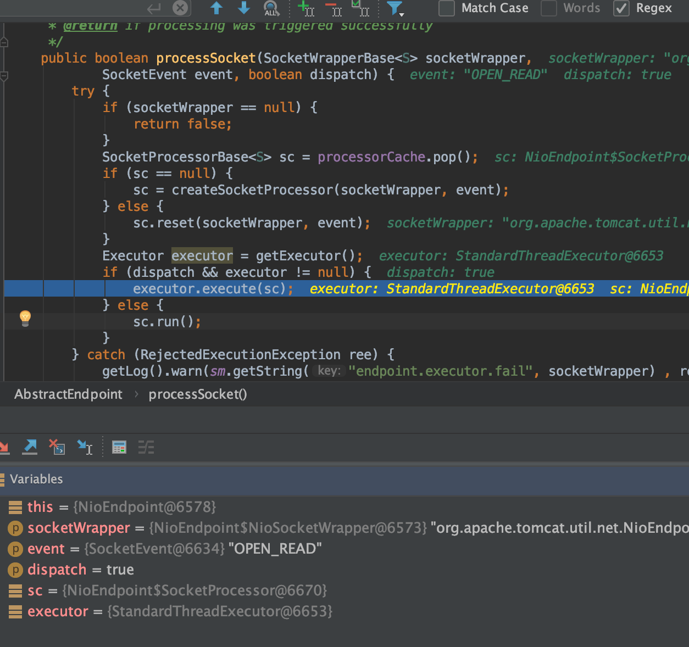
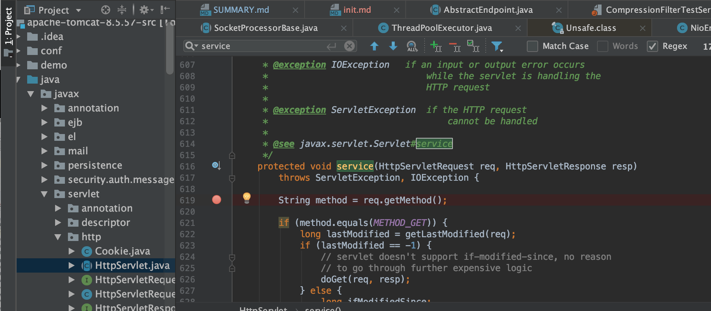
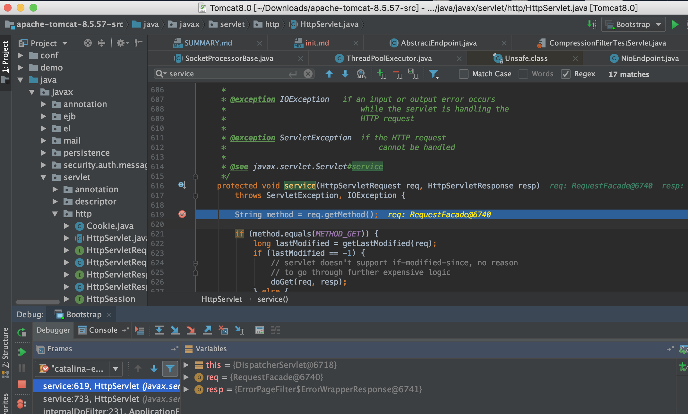
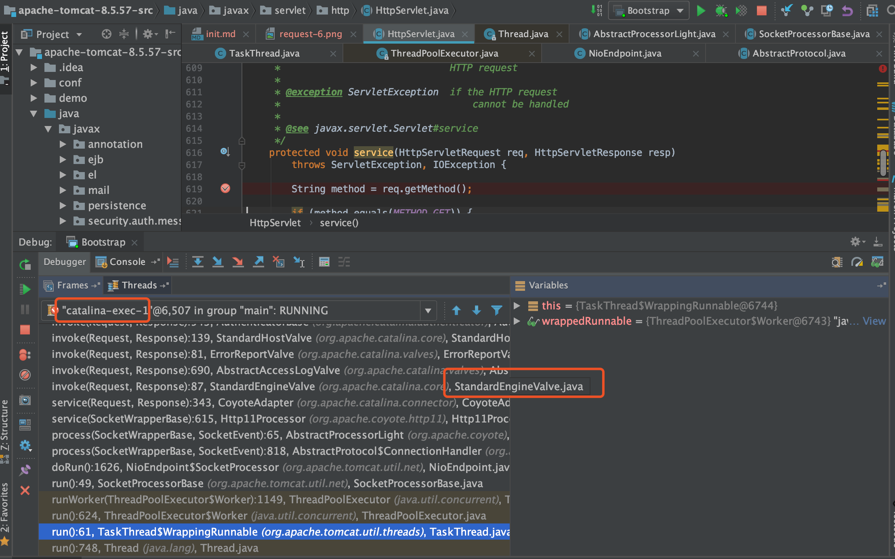
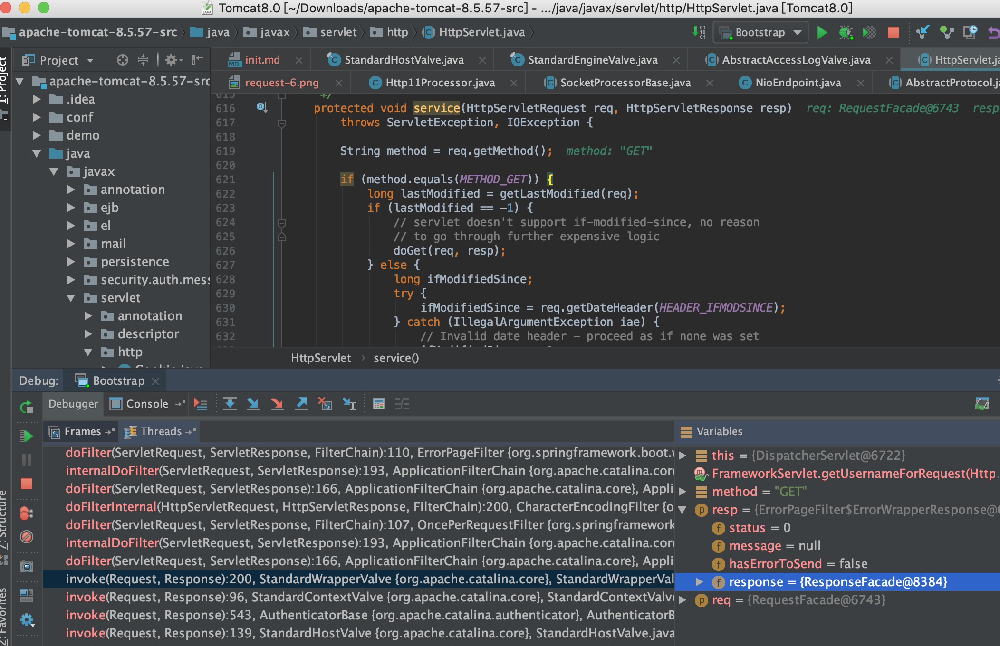

TreeviewCopyright @doctording all right reserved, powered by aleen42
Tomcat加载web项目和处理请求流程
跟踪请求处理流程
直接断点打到Acceptor的processKey方法
- 浏览器发起请求

- 处理读请求


- 请求发到Servlet容器的service方法,所以直接HttpServlet service方法断点


- 请求栈（责任链模式）

- 请求通过线程池去执行，具体是NioEndPoint的doRun方法
- 会封装SocketWrapperBase,转发到Http11Processor处理
- 然后再交给Standard的
Engine（Engine是一个Servlet容器）处理 - Engine之后可以看到有Standard的
Host,Context,Wrapper等处理，中间有各种Filter操作，最后是Servlet Servlet容器的HttpServlet类的service方法得到了具体的HttpRequest请求
请求处理和返回
